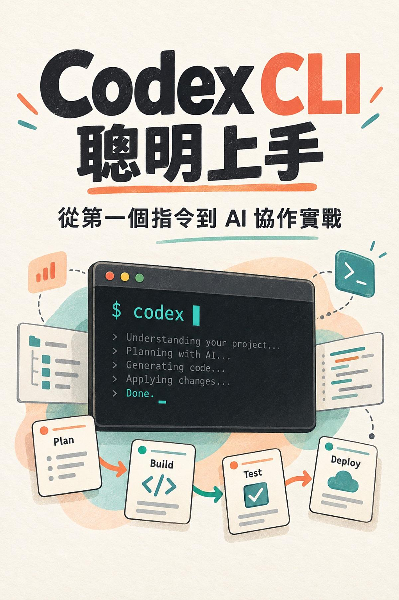

適合哪些讀者？
具備基本終端機操作經驗，想把 Codex CLI 用於實際練習的自學者。
開始前先準備
選一個可以完整看懂的小型專案，記錄開始前的檔案狀態。
內容主題導覽
待辦搜尋、進度摘要、既有程式除錯，以及閱讀清單網站的分類篩選。
以上依作品簡介整理學習主題，完整章節與素材版本請以書內說明為準。
網站延伸練習
準備正常、空值及錯誤輸入三種情境，觀察結果並記下差異。
從第一個指令到 AI 協作實戰

Codex CLI 聰明上手
從第一個指令到 AI 協作實戰
Codex CLI 不只是替你產生程式碼的工具。要讓它在既有專案中可靠地完成工作，你還需要選對工作目錄、說清楚目標與限制，並親自檢查修改和驗收結果。本書以繁體中文帶你從第一個命令開始，透過待辦事項 CLI、既有程式除錯，以及閱讀清單網站分類篩選，逐步練習如何讓 Codex CLI 參與探索、規劃、修改、驗證與交付。內容涵蓋專案上下文、清楚交辦、權限與安全、指令驗證、Git 差異審查，以及可重複使用的工作流程。書中安排待辦搜尋、進度摘要與網站分類篩選等實作，並提供起始檔、提示範例和可自行檢查的驗收方式。適合具備基本終端機操作經驗，想開始在實際專案中使用 Codex CLI 的自學者與開發者。